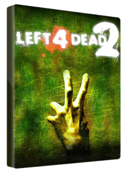

Left 4 Dead 2 este un joc video de tip shooter First-Person Shooter, dezvoltat şi publicat de Valve Corporation . Continuarea studioului Turtle Rock Studios Left 4 Dead , joc lansat pentru Microsoft Windows şi Xbox 360 în noiembrie 2009, pentru OS X în octombrie 2010 şi pentru Linux în iulie 2013. Left 4 Dead 2 se bazează pe gameplay-ul focalizat în mod cooperativ şi pe motorul propriu-zis " Source" al lui Valve, acelaşi motor de joc folosit în originalul Left 4 Dead . Stabilit în urma unei epidemii apocaliptice, Left 4 Dead 2 se concentreaza pe patru supravieţuitori noi, luptând împotriva hoardelor de zombi, cunoscuţi sub numele de infectaţi, care dezvoltă psihoze severe şi acţioneaza extrem de agresivi.
Preţ : 47,64 €